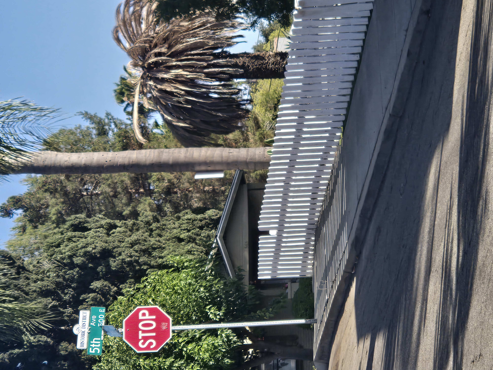
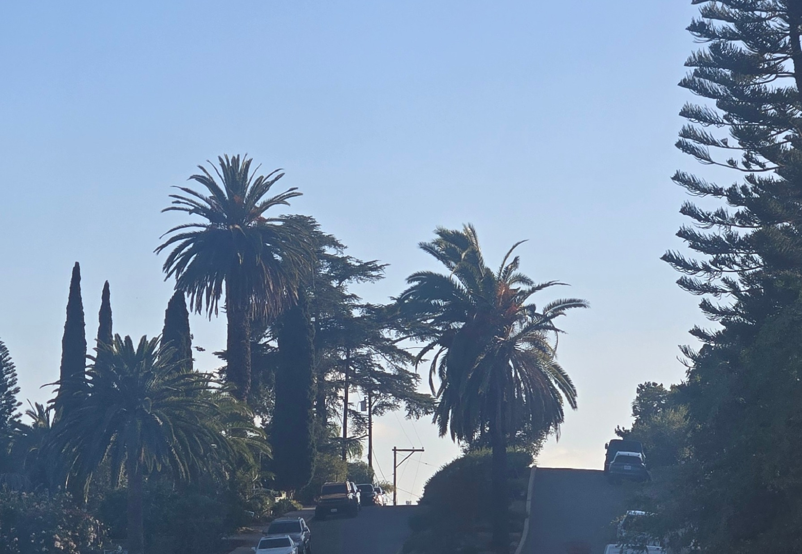

An evening walk through Old Escondido can quickly show why mature Canary Island Date Palms matter here. Within only a few blocks, the neighborhood holds full-canopied landmark palms, palms showing severe decline, and streets where multiple mature CIDPs rise above homes, sidewalks, and older properties.
Old Escondido likely contains one of the highest concentrations of mature Canary Island Date Palms in inland San Diego County. These palms help define the neighborhood's identity, skyline, shade, aesthetics, and historic character. They are not just landscape features; they are part of the visual record of the community.
This field note is about looking carefully, preserving context, and raising awareness - not alarmism. Decline should not be diagnosed from photos alone. Not every declining palm is affected by South American Palm Weevil, and visible decline can result from age, irrigation issues, environmental stress, disease, pests, or several factors occurring together.
What the Walk Showed
The contrast was clear: some mature Canary Island Date Palms still carried strong, balanced canopies, while others nearby showed dramatic crown loss and fallen frond material. That range of conditions is exactly why it is worth keeping a careful visual record. Photos taken today help show how Old Escondido's urban palm canopy changes over time.

A striking contrast in Old Escondido: a mature Canary Island Date Palm with a full canopy stands beside a nearby palm experiencing severe decline.

A Canary Island Date Palm near the Historic District sign showing advanced crown decline and dramatic canopy loss.

Multiple mature Canary Island Date Palms rising above the streets of Old Escondido, illustrating the neighborhood's remarkable palm canopy.
Why the Record Matters
Mature CIDPs can change quickly once crown structure, spear condition, or frond retention begins to shift. Property owners with mature palms should monitor for sudden canopy changes, asymmetry, spear issues, and premature frond collapse, then compare those observations over time before assuming a cause.
The Old Escondido Palm Preservation Initiative exists to keep this kind of neighborhood observation visible. For owners who are unsure what to watch for, the CIDP Risk Checklist can help organize photos and observations, while the South American Palm Weevil information page explains one important local pest concern without turning every declining palm into a diagnosis. Recurring palm monitoring can also support a more consistent photographic documentation rhythm for mature palms.
View the Old Escondido Preservation Initiative